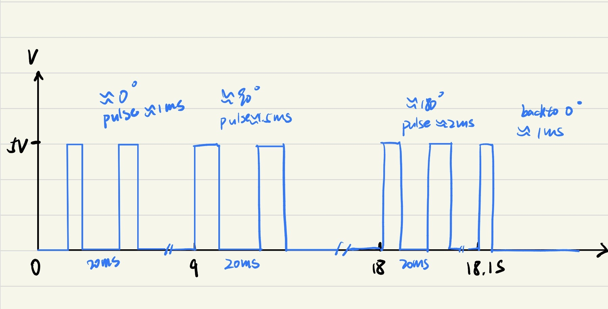
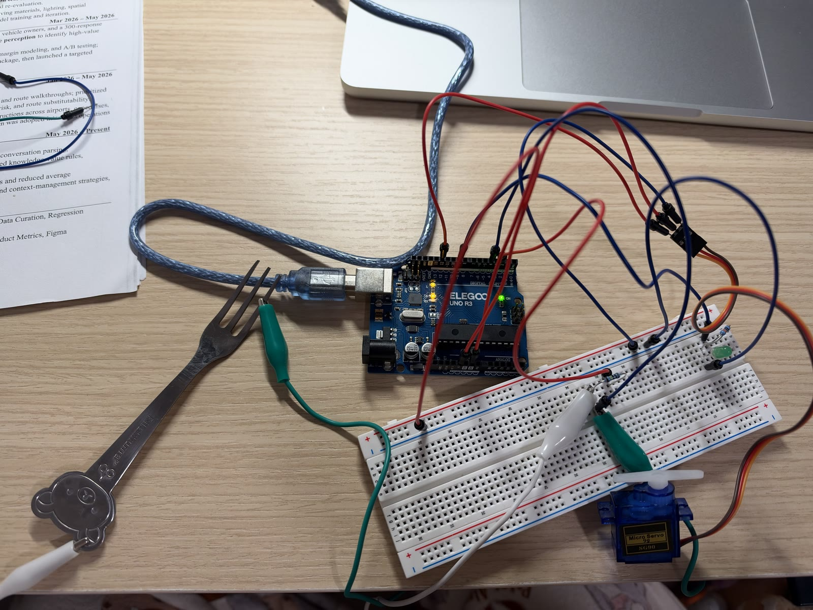
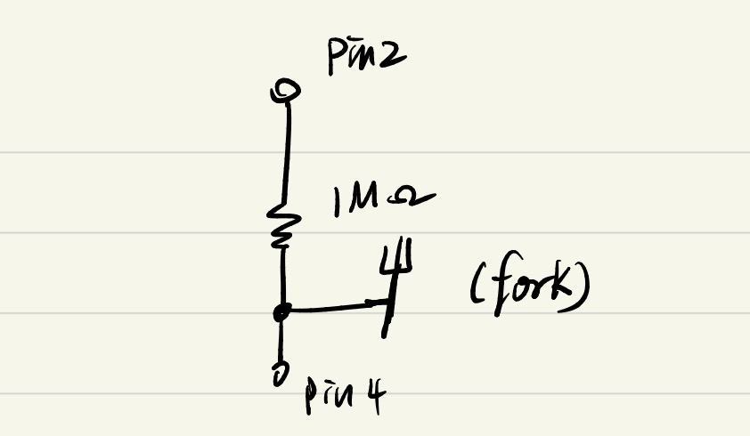
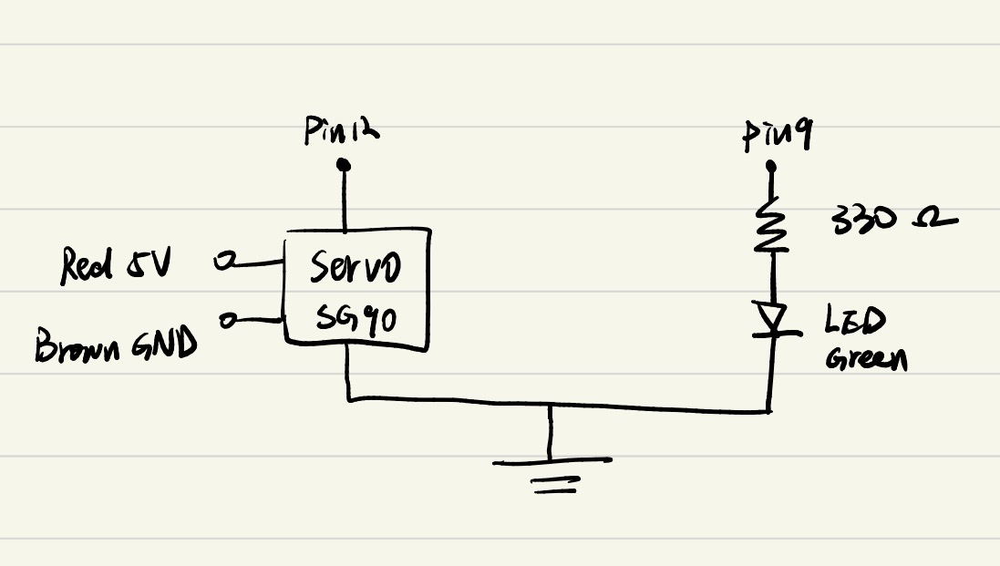
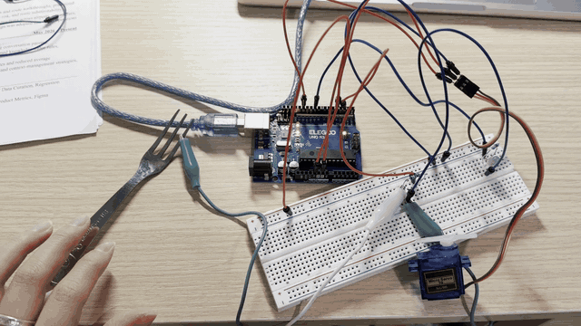

1. What does the servo signal on pin 9 look like?
Pin 9 sends 0–5 V pulses about every 20 ms. Pulse width increases every 100 ms and resets after about 18.1 s.

HCDE 439 · Assignment 04
Touch the metal fork to light the green LED and move the servo.

Project overview
CapacitiveSensor detects touch at the fork. Servo moves the SG90 to 90° on touch and back to 0° on release.
Plan


1 MΩ sensing resistor. The large resistance slows the voltage change at pin 4, making the difference between touching and releasing the fork easier to measure.
330 Ω LED resistor. The resistor limits LED current to about (5 V − 2.1 V) / 330 Ω = 8.8 mA, assuming a 2.1 V drop across the LED.
Build
Test

Touch turns the LED on and moves the servo to 90°.
Release turns the LED off and moves it back to 0°.
// Use the Arduino Servo library to generate control pulses for the SG90.
#include <Servo.h>
// Use the CapacitiveSensor library by Paul Badger and Paul Stoffregen.
#include <CapacitiveSensor.h>
// Create a controller for the SG90 servo.
Servo myServo;
// Drive pin 2 through the 1 MΩ resistor and read the fork at pin 4.
CapacitiveSensor touchSensor(2, 4);
// Send the servo control pulses from pin 12.
const int servoPin = 12;
// Switch the green LED on pin 9 through its 330 Ω series resistor.
const int ledPin = 9;
// Treat a reading above 100 library counts as a touch.
const long threshold = 100;
void setup() {
// Print sensor readings to the Serial Monitor at 9600 baud.
Serial.begin(9600);
// Set pin 9 as a digital output so it can switch the LED.
pinMode(ledPin, OUTPUT);
// Enable Servo library control of the signal wire on pin 12.
myServo.attach(servoPin);
}
void loop() {
// Sum 30 sensing cycles to obtain one capacitance reading.
const long sensorValue = touchSensor.capacitiveSensor(30);
// Print the reading so untouched and touched values can be compared.
Serial.println(sensorValue);
// Activate the outputs only when the reading exceeds the threshold.
if (sensorValue > threshold) {
// Command a quarter turn from the resting position.
myServo.write(90);
// Light the green LED while the fork is touched.
digitalWrite(ledPin, HIGH);
} else {
// Return the servo to the resting position when the fork is released.
myServo.write(0);
// Switch off the green LED.
digitalWrite(ledPin, LOW);
}
// Pause 50 ms before sampling again to space readings and serial output.
delay(50);
}Questions
Pin 9 sends 0–5 V pulses about every 20 ms. Pulse width increases every 100 ms and resets after about 18.1 s.

Use a median filter for occasional bad readings. Take three readings close together, sort them, and keep the middle value.
function readWithOutlierRejection():
samples = []
repeat 3 times:
samples.append(readSensor())
wait 10 ms
sort samples in ascending order
return samples[1] // middle element, using zero-based indexingFor example, if the fork is untouched and the sensor reports 82, 900, and 84, the median is 84. The single spike above the touch threshold of 100 would be ignored.
Use a moving average. Every 10 ms, add a new reading, drop the oldest once there are more than 10, and average the readings left in the queue.
recent = empty queue
repeat every 10 ms:
recent.pushBack(readSensor())
if recent.size() > 10:
recent.popFront()
filteredValue = sum(recent) / recent.size()
use(filteredValue)If the true value is near 100, readings like 90 and 110 can balance each other in the average. This smooths random noise, but a real change takes a few samples to show up because older readings are still in the window.
Building the website. Prompt: “Help me create a new page that matches the style of my existing website.”
Debugging the upload. I shared a screenshot showing cannot open port /dev/cu.usbmodem2101. ChatGPT suggested switching to /dev/cu.usbmodem101. The upload worked after I switched ports, which helped me see that the sketch had compiled and the issue was with the connection.